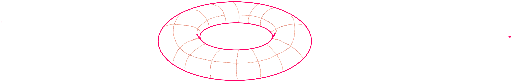

Notebook source code:
notebooks/01_foundations__manifolds.ipynb
Run it yourself on binder

\(\textbf{Lead Author: Adele Myers}\)
Inspired by: Guigui, Miolane, Pennec, 2022. Introduction to Riemannian Geometry and Geometric Statistics: from basic theory to implementation with Geomstats.
Note: Before you start to read this notebook, run the following code. This will import packages that will allow later code to run.
In [20]:
import os
import sys
import warnings
sys.path.append(os.path.dirname(os.getcwd()))
warnings.filterwarnings("ignore")
import geomstats.backend as gs
gs.random.seed(2020)
1. Introduction
Welcome to the Manifold class notebook! In this notebook, we will discuss manifolds and the Manifold class in Geomstats. Geomstats is a software which analyzes data on manifolds, so naturally the Manifold class is quite important.
You will learn:
What is a manifold?
Why do we care about manifolds?
What does the
Manifoldclass do?How is the
Manifoldclass structured?What is an open set?
What is a closed set?
What is a tangent space?
2. What is a Manifold?
\(\textbf{Intuition:}\) When you are first learning, it can be a helpful starting point to think of a manifold as a surface. This surface can have any dimension and any shape as long as it is smooth (in the sense of being continuous and differentiable). (This is not a particularly precise definition, but it can be helpful starting point for building intuition.) For example, a hypersphere is a two dimensional manifold, and we will often use this manifold in examples.
2.1 Precise Mathematical Definition
A manifold is a set of points that satisfy a specific set of constraints. More specifically, a nonempty subset M \(\subseteq \mathbb{R}^{N}\) is a d-dimensional manifold if and only if ANY of the following conditions hold:
(Local parametrization) For every \(p \in M\), there are two open subsets $ V \subseteq `:nbsphinx-math:mathbb{R}`^{d}$ and $ U \subseteq `:nbsphinx-math:mathbb{R}`^{N}$ with \(p \in U\) and \(0 \in V\). There is also a smooth function \(f: V \to \mathbb{R}^{N}\) such that \(f(0) = p\), where \(f\) is a homeomorphism between V and \(U \cap M\), and \(f\) is an immersion at 0.
(Local implicit function) For every \(p \in M\), there exists an open set \(U \in \mathbb{R}^{N}\) and a smooth map \(f: U \to \mathbb{R}^{N-d}\) that is a submersion at p, such that \(U \cap M = f^{-1}\)({0}).
(Local Graph) For every \(x \in M\), there exists an open neighborhood \(U \subseteq \mathbb{R}^{N}\) of \(x\), a neighborhood \(V \subseteq \mathbb{R}^{d}\) of 0 and a smooth map \(f: V \to \mathbb{R}^{N-d}\) such that \(U \cap M = graph(f)^{2}\)
2.2 Imprecise “Layman’s Terms” Definition:
A \(\textbf{manifold}\) is a set of points that satisfy a specific set of constraints, and these constraints are given by the mathematical definition above. That means that if a set of points satisfies any one of the conditions, then it is a manifold. However, these conditions can be hard to digest. We can translate the above mathematical conditions into three different ways of describing manifolds:
(Local Parametrization) a manifold is a topological space that locally resembles Euclidean space near each point. For example, consider a two dimensional grid. We would not be able to deform this grid to have the shape of a sphere under any circumstance, but at each \(\textbf{local}\) point on the manifold, we can approximate the space around the point with a Euclidean grid.
(Local Implicit Function) a manifold can be understood as the set of points that verify a constraint defined by an implicit equation, given by the function \(f\). (see hypersphere example)
(Local Graph) a manifold can be understood as a d-dimensional surface described by d variables, i.e. by the “graph” of a smooth function \(f: (x_1,...,x_d) \to f(x_1,...,x_d)\). This local graph cannot be applied globally (to the whole manifold) because a function \(f\) must have only one output per set of inputs, and if we were to try to describe the whole manifold with such a graph, then many manifolds would have more than one output for one set of inputs.
The figure below provides a visualization of each of these definitions. The first figure is a visualization of “local parametrization”, the second is a visualization of “local implicit function” and the third is a visualization of “local graph”:

Each one of these definitions of a manifold is important because each one gives us an additional way to describe a manifold. This is useful because some manifolds are much easier described (or computationally implemented) by one of these definitions than the others. For example, any three of these definitions can be used to describe a hypersphere, but a hypersphere is most easily implemented using definition (2).
2.3 Hypersphere example:
Here, we will consider how to prove that a hypersphere is a manifold using the second condition in the definition of a manifold above (2).
A \(\textbf{hypersphere}\) is any of a set of objects (n-dimensional spheres) resulting from the generalization of a one-dimensional circle and a two-dimensional sphere. The dimension of the manifold is n and is equal to the number of degrees of freedom of a point moving on In n-dimensional space, a hypersphere is the set of all points that are a given distance (called the radius) from a given point (called the center). For example, a 2-dimensional hypersphere in 3-dimensions describes all the points in 3D space that lie on the surface of a sphere. In other words, a hypersphere describes all of the points that lie in three dimensions that have two degrees of freedom \((\phi, \theta)\).
\(\textbf{How do we know that a hypersphere is a manifold?}\) Well, we know from the definition of a hypersphere that a hypersphere is the set of all points that are a given distance from the center of your coordinate system. For example in 3-dimensions, the surface \(S\) of a sphere with radius 1 can be described by the relation:
\(|x|^{2} = 1\)
This simply says that all the points must be a distance of 1 away from the center. (see above figure (b) and take a = 1).
We can now define a function
\(f(x) = |x|^{2} - 1\)
We know that this function \(f\) will always equal zero for all points that lie on the surface \(S\) because in order for a point to fall on the surface \(S\) the condition \(|x|^{2} = 1\) must be true. In other words,
\(x \in S \iff f(x) = 0\)
which tells us that
\(x \in S \iff x \in f^{-1}\)({0})
This last line matches the definition of a manifold: \(M = f^{-1}\)({0}) where \(M\) is the set of points \(x\) that satisfy the condition \(|x|^{2} = 1\). Therefore, the set of points that satisfy the condition \(|x|^{2} = 1\) form a manifold.
2.4 More examples of manifolds:
A hyperphere is one type of manifold, but there are many other types of manifolds that are commonly used and seen in nature. We will show a few examples here to help you build intuition about what a manifold is and what a manifold can look like.
For example, a torus (the surface of a donut) is a manifold.

A klein bottle (the surface of the shape shown below) is also a manifold.

Perhaps a more familiar example for those in physics: Minkowski space (or Minkowski spacetime) is a combination of three-dimensional Euclidean space and time into a four-dimensional manifold (where x, y, z, and time are the dimensions of the space). This manifold is theorized to take one of three forms. A 4-dimensional manifold of: (a) flat curvature, (b) positive curvature, or (c) negative curvature.

3. Why do we care about manifolds?
\(\textbf{Manifolds are important because data in nature "naturally falls on manifolds"}\), and as we discussed in the introduction section, knowing the manifold that a data set belongs to may give you more predictive power and a better understanding of the data’s evolution.
\(\textbf{What does it mean for data to "naturally fall on a manifold"?}\) In nature, data are often subject to constraints, and these constraints force the data to lie on manifolds. For example, consider the position of cities on the earth.

The cities are subject to the following constraints: 1) they cannot fly above the surface of the earth because gravity holds them down and 2) they cannot sink down into the earth because the surface of the earth holds them up. Therefore, they are constrained to move (or not move) on the surface of a 3-dimensional sphere. This space that they are confined to exist in should sound familiar– it is the space of a 2-dimensional hypersphere!
Other data falls on manifolds in similar ways: the data is subject to certain constraints, which forces it to fall on a manifold.
4. What does the Manifold class do?
The Manifold class describes different types of manifolds. The Manifold class and its subclasses implement methods that establish the properties of different types of manifolds, and the manifolds that exist under these subclasses inherit the properties implemented in their respective sublclasses.
Note: The words “class”, “subclass”, “methods” refer to object oriented programming.
The manifold class also provides ways of checking whether a vector is \(\textit{tangent}\) to a manifold and ways of projecting a vector to the \(\textit{tangent space}\) of a manifold. In order to better describe what this means, we will now define \(\textit{tangent vectors}\) and \(\textit{tangent spaces}\).
4.1 Tangent Vectors
Here we will provide a brief reminder of tangent vectors as a way to lay the groundwork for discussing tangent spaces.
A \(\textbf{tangent vector}\) is a vector that is “tangent” to a curve or surface at a given point. When a vector is “tangent” to a curve, this means that the vector has the same slope as the curve does at that point.
4.2 Tangent Spaces
Now we will introduce the concept of a “tangent space”. The tangent space at a certain point on a manifold is comprised of all of the possible tangent vectors that exist at that point. For example, if you are considering the tangent space on a curve, then the only possible tangent vectors are tangent vectors that point forward and backward along the line (a). However, if you are considering the tangent space at a point on a surface, then the tangent vectors can point forward, backward, left, right, and everywhere in between, and the set of all tangent vectors forms a plane (b).

Thus, the tangent space of a 1-dimensional manifold (curve) is also one dimensional, and the tangent space of a 2-dimensional manifold (a 2-dimensional surface) is also 2-dimensional.
Similarly, for every n-dimensional manifold, there exists an n-dimensional tangent space at each point on the manifold, and the tangent space is comprised of all possible tangent vectors on that manifold.
5. How is the Manifold class structured?
The hierarchical structure of the classes inheriting from the Manifold parent class is as follows (this Figure is a courtesy of Nicolas Guigui):

As discussed in the previous section, one of the primary purposes of the Manifold class is to hold information about various types of manifolds. Rules that are universally true for all manifolds are implemented in methods in the parent class Manifold. Rules that are true for some types of manifolds are implemented in the subclasses of Manifold: LevelSet, OpenSet, FiberBundle, ProductManifold, VectorSpace, MatrixLieAlgebra, and MatrixLieGroup. Specific
types of manifolds are described in methods within these subclasses.
In this notebook, we will focus on describing the subclasses pertenant to the geometry module of geomstats: LevelSet, OpenSet, ProductManifold and VectorSpace.
In the following subsections, we will discuss the methods and ideas implemented in the parent class and its subclasses.
5.1 The Parent Class: Manifold
The Manifold parent class is an abstract base class which provides the minimal skeleton of attributes and methods expected in its subclasses. Note that the methods of the abstract parent class are declared, but they contain no implementation, and they are overridden by the subclasses. The properties that are declared in the Manifold class are properties that all types of manifold must posess. For example, the following methods and attributes are implemented in Manifold:
dim: \(\textit{attribute}\). the dimension of the manifold. “How many coordinates are necessary to fully describe the manifold?”belongs(): \(\textit{method}\). evaluates whether a given element belongs to that manifoldis_tangent(): \(\textit{method}\). evaluates whether a given vector is a tangent vector at a given pointrandom_point(): \(\textit{method}\). generates a random point that lies on the manifold
While the abstract methods in Manifold do not contain any implementation, the methods of the subclasses of Manifold, such as the Hypersphere subclass, \(\textit{are}\) implemented and can be run. We will now exemplify this in the following section
5.1.1 Examples of Using Manifold’s Attributes and Methods in the Subclass: Hypersphere
\(\textbf{Attributes:}\)
dim : If we build a hypersphere of dimension 2 with the following code, we can check that sphere.dim gives back 2. Run the following code to verify this:
In [7]:
from geomstats.geometry.hypersphere import Hypersphere
sphere = Hypersphere(dim=2)
print(f"The dimension of the sphere is {sphere.dim}")
The dimension of the sphere is 2
\(\textbf{Methods:}\)
belongs : We can re-use the sphere we just built (called “sphere”) and verify that the point (0, 0, 1) belongs to that sphere (it is the north pole). Run the following code to verify this using Geomstats.
In [5]:
import geomstats.backend as gs
sphere.belongs(gs.array([0, 0, 1]))
Out [5]:
True
is_tangent : The vector (1, 1, 0 ) is tangent to the sphere at the north pole, since it does not have a vertical component (last component is equal to 0). Run the following code to verify this using Geomstats.
In [9]:
sphere.is_tangent(vector=gs.array([1, 1, 0]), base_point=gs.array([0, 0, 1]))
Out [9]:
True
random_point : Now, we will use random_point to generate a random point, and then we will use belongs to prove that this random point belongs to the sphere.
In [15]:
from geomstats.geometry.hypersphere import Hypersphere
rp=Hypersphere.random_point(sphere)
sphere.belongs(rp)
Out [15]:
True
5.1.2 The Full Manifold Class Code
You can see all of the methods in the Manifold parent class by running the following code. Observe the abstract methods denoted with “@abc.abstractmethod” that do not contain any implementation, but serve as template for the subclasses to overwrite. The code of Manifold can also be found here.
In [27]:
import inspect
from geomstats.geometry.manifold import Manifold
for line in inspect.getsourcelines(Manifold)[0]:
line = line.replace('\n','')
print(line)
class Manifold(abc.ABC):
r"""Class for manifolds.
Parameters
----------
dim : int
Dimension of the manifold.
shape : tuple of int
Shape of one element of the manifold.
Optional, default : None.
metric : RiemannianMetric
Metric object to use on the manifold.
default_point_type : str, {\'vector\', \'matrix\'}
Point type.
Optional, default: 'vector'.
default_coords_type : str, {\'intrinsic\', \'extrinsic\', etc}
Coordinate type.
Optional, default: 'intrinsic'.
"""
def __init__(
self,
dim,
shape,
metric=None,
default_point_type=None,
default_coords_type="intrinsic",
**kwargs
):
super(Manifold, self).__init__(**kwargs)
geomstats.errors.check_integer(dim, "dim")
if not isinstance(shape, tuple):
raise ValueError("Expected a tuple for the shape argument.")
if default_point_type is None:
default_point_type = POINT_TYPES[len(shape)]
geomstats.errors.check_parameter_accepted_values(
default_point_type, "default_point_type", ["vector", "matrix"]
)
self.dim = dim
self.shape = shape
self.default_point_type = default_point_type
self.default_coords_type = default_coords_type
self.metric = metric
@abc.abstractmethod
def belongs(self, point, atol=gs.atol):
"""Evaluate if a point belongs to the manifold.
Parameters
----------
point : array-like, shape=[..., dim]
Point to evaluate.
atol : float
Absolute tolerance.
Optional, default: backend atol.
Returns
-------
belongs : array-like, shape=[...,]
Boolean evaluating if point belongs to the manifold.
"""
@abc.abstractmethod
def is_tangent(self, vector, base_point, atol=gs.atol):
"""Check whether the vector is tangent at base_point.
Parameters
----------
vector : array-like, shape=[..., dim]
Vector.
base_point : array-like, shape=[..., dim]
Point on the manifold.
atol : float
Absolute tolerance.
Optional, default: backend atol.
Returns
-------
is_tangent : bool
Boolean denoting if vector is a tangent vector at the base point.
"""
@abc.abstractmethod
def to_tangent(self, vector, base_point):
"""Project a vector to a tangent space of the manifold.
Parameters
----------
vector : array-like, shape=[..., dim]
Vector.
base_point : array-like, shape=[..., dim]
Point on the manifold.
Returns
-------
tangent_vec : array-like, shape=[..., dim]
Tangent vector at base point.
"""
@abc.abstractmethod
def random_point(self, n_samples=1, bound=1.0):
"""Sample random points on the manifold.
If the manifold is compact, a uniform distribution is used.
Parameters
----------
n_samples : int
Number of samples.
Optional, default: 1.
bound : float
Bound of the interval in which to sample for non compact manifolds.
Optional, default: 1.
Returns
-------
samples : array-like, shape=[..., {dim, [n, n]}]
Points sampled on the hypersphere.
"""
def regularize(self, point):
"""Regularize a point to the canonical representation for the manifold.
Parameters
----------
point : array-like, shape=[..., dim]
Point.
Returns
-------
regularized_point : array-like, shape=[..., dim]
Regularized point.
"""
regularized_point = point
return regularized_point
@property
def metric(self):
"""Riemannian Metric associated to the Manifold."""
return self._metric
@metric.setter
def metric(self, metric):
if metric is not None:
if not isinstance(metric, RiemannianMetric):
raise ValueError("The argument must be a RiemannianMetric object")
if metric.dim != self.dim:
metric.dim = self.dim
self._metric = metric
5.2 OpenSet
Earlier in the notebook, we were able to say that a set of points is a manifold if it satisfied one of three constraints. We also said that every manifold can be described by any three of these definitions, and the choice of defintion is merely a question of which definition is most convenient. OpenSet provides a way of describing manifolds with local parametrization, which was labeled (1) on our definition list.
One such way to describe a manifold is with the concept of an \(\textbf{Open Set}\): a manifold is the open sets of a d-dimensional vector space, called \(\textbf{ambient space}\).
5.2.1 What is an Open Set?
Intuitively, an open set is a group of numbers that does not include points on the boundary of whatever they are describing. For example, if you were to take the set of all points between a and b but \(\textbf{not}\) include the values a and b, this would be an open set (shown in figure a). If you were to take the set of all points between a and b and include the values a and b, this would be a closed set (shown in figure b)
The above examples showed open and closed sets in one dimension. Similarly, in two dimensions, open sets can be defined as sets which do not contain their boundaries. For example, the inside of the sphere, i.e. the ball without its boundary, is a manifold that is an open set. The image below shows an example of an open set (a) and a closed set (b) in two dimensions.

5.2.2 What Methods are Implemented in OpenSet?
If we know that a manifold is conveniently described as an open set, then some of the manifold’s abstract methods can be rewritten in a specific form. For example, OpenSet implements the methods:
projection(): a method to project any d-dimensional vector to the manifold.is_tangent(): checks whether the input vector is tangent at the input point.to_tangent(): projects a vector to a tangent space of the manifold.
Note that we do not (yet) specify which manifold we are talking about (whether it is a sphere or another surface), we are just saying that we are looking at some manifold that can be described as an open set
Run the code below to see the contents of the OpenSet class.
In [26]:
import inspect
from geomstats.geometry.base import OpenSet
for line in inspect.getsourcelines(OpenSet)[0]:
line = line.replace('\n','')
print(line)
class OpenSet(Manifold, abc.ABC):
"""Class for manifolds that are open sets of a vector space.
In this case, tangent vectors are identified with vectors of the ambient
space.
Parameters
----------
dim: int
Dimension of the manifold. It is often the same as the ambient space
dimension but may differ in some cases.
ambient_space: VectorSpace
Ambient space that contains the manifold.
"""
def __init__(self, dim, ambient_space, **kwargs):
if "default_point_type" not in kwargs:
kwargs["default_point_type"] = ambient_space.default_point_type
if "shape" not in kwargs:
kwargs["shape"] = ambient_space.shape
super().__init__(dim=dim, **kwargs)
self.ambient_space = ambient_space
def is_tangent(self, vector, base_point=None, atol=gs.atol):
"""Check whether the vector is tangent at base_point.
Parameters
----------
vector : array-like, shape=[..., dim]
Vector.
base_point : array-like, shape=[..., dim]
Point on the manifold.
atol : float
Absolute tolerance.
Optional, default: backend atol.
Returns
-------
is_tangent : bool
Boolean denoting if vector is a tangent vector at the base point.
"""
return self.ambient_space.belongs(vector, atol)
def to_tangent(self, vector, base_point=None):
"""Project a vector to a tangent space of the manifold.
Parameters
----------
vector : array-like, shape=[..., dim]
Vector.
base_point : array-like, shape=[..., dim]
Point on the manifold.
Returns
-------
tangent_vec : array-like, shape=[..., dim]
Tangent vector at base point.
"""
return self.ambient_space.projection(vector)
def random_point(self, n_samples=1, bound=1.0):
"""Sample random points on the manifold.
If the manifold is compact, a uniform distribution is used.
Parameters
----------
n_samples : int
Number of samples.
Optional, default: 1.
bound : float
Bound of the interval in which to sample for non compact manifolds.
Optional, default: 1.
Returns
-------
samples : array-like, shape=[..., {dim, [n, n]}]
Points sampled on the hypersphere.
"""
sample = self.ambient_space.random_point(n_samples, bound)
return self.projection(sample)
@abc.abstractmethod
def projection(self, point):
"""Project a point in ambient manifold on manifold.
Parameters
----------
point : array-like, shape=[..., dim]
Point in ambient manifold.
Returns
-------
projected : array-like, shape=[..., dim]
Projected point.
"""
5.3 LevelSet
5.3.1 What is a Level Set?
Another elementary class of manifolds are \(\textbf{Level Sets}\). A level set is the set of values \(x\) for which a function f(x) is equal to a given constant. In other words, a level set is a set of curves for which the fucntion describing a manifold is constant along that curve.
In the same way that OpenSet is an implementation of the first definition of a manifold (Local Parametrization), LevelSet is an implementation of the second definition of a manifold (Local Implicit Function). a level set is a set of points for which the function \(f\) takes the exact same value. This value is called the “level”, and does not need to be a scalar, it could also be a vector.
For example, consider a hypersphere in three dimensional space. Each of the concentric spheres is a 2-dimensional manifold, each corresponding to a different level \((r1, r2,r3)\).
You can see here that the subclass Hypersphere is indeed implemented as a LevelSet.
5.3.2 LevelSet in Geomstats
You can run the code below to see the contents of the LevelSet class. The methods of LevelSet are similar to the methods of OpenSet , but their implementation is different. Recall from the (Local Implicit Function) definition, which LevelSet is an implementation of, that a manifold of this type must satisfy:
“For every \(p \in M\), there exists an open set \(U \in \mathbb{R}^{N}\) and a smooth map \(f: U \to \mathbb{R}^{N-d}\) that is a submersion at p, such that \(U \cap M = f^{-1}\)({0}).”
OpenSet is an implementation of the first manifold definition (Local Parametrization), and therefore need not follow the (Local Implicit Function) rule above. This is the reason that, OpenSet methods and LevelSet methods are implemented differently. As an example of these different implementations: observe the implementation of the belongs methods in LevelSet. For a general level set, in order to verify if a point belongs to the level set, we should verify that the (Local
Implicit Function) definition constraint is met, which is done with the line
constraint = gs.isclose(self.submersion(point), value, atol=atol)
In [25]:
import inspect
from geomstats.geometry.base import LevelSet
for line in inspect.getsourcelines(LevelSet)[0]:
line = line.replace('\n','')
print(line)
class LevelSet(Manifold, abc.ABC):
"""Class for manifolds embedded in a vector space by a submersion.
Parameters
----------
dim : int
Dimension of the embedded manifold.
embedding_space : VectorSpace
Embedding space.
default_coords_type : str, {'intrinsic', 'extrinsic', etc}
Coordinate type.
Optional, default: 'intrinsic'.
"""
def __init__(
self,
dim,
embedding_space,
submersion,
value,
tangent_submersion,
default_coords_type="intrinsic",
**kwargs
):
if "shape" not in kwargs:
kwargs["shape"] = embedding_space.shape
super(LevelSet, self).__init__(
dim=dim,
default_point_type=embedding_space.default_point_type,
default_coords_type=default_coords_type,
**kwargs
)
self.embedding_space = embedding_space
self.embedding_metric = embedding_space.metric
self.submersion = submersion
if isinstance(value, float):
value = gs.array(value)
self.value = value
self.tangent_submersion = tangent_submersion
def belongs(self, point, atol=gs.atol):
"""Evaluate if a point belongs to the manifold.
Parameters
----------
point : array-like, shape=[..., dim]
Point to evaluate.
atol : float
Absolute tolerance.
Optional, default: backend atol.
Returns
-------
belongs : array-like, shape=[...,]
Boolean evaluating if point belongs to the manifold.
"""
belongs = self.embedding_space.belongs(point, atol)
if not gs.any(belongs):
return belongs
value = self.value
constraint = gs.isclose(self.submersion(point), value, atol=atol)
if value.ndim == 2:
constraint = gs.all(constraint, axis=(-2, -1))
elif value.ndim == 1:
constraint = gs.all(constraint, axis=-1)
return gs.logical_and(belongs, constraint)
def is_tangent(self, vector, base_point, atol=gs.atol):
"""Check whether the vector is tangent at base_point.
Parameters
----------
vector : array-like, shape=[..., dim]
Vector.
base_point : array-like, shape=[..., dim]
Point on the manifold.
atol : float
Absolute tolerance.
Optional, default: backend atol.
Returns
-------
is_tangent : bool
Boolean denoting if vector is a tangent vector at the base point.
"""
belongs = self.embedding_space.is_tangent(vector, base_point, atol)
tangent_sub_applied = self.tangent_submersion(vector, base_point)
constraint = gs.isclose(tangent_sub_applied, 0.0, atol=atol)
value = self.value
if value.ndim == 2:
constraint = gs.all(constraint, axis=(-2, -1))
elif value.ndim == 1:
constraint = gs.all(constraint, axis=-1)
return gs.logical_and(belongs, constraint)
def intrinsic_to_extrinsic_coords(self, point_intrinsic):
"""Convert from intrinsic to extrinsic coordinates.
Parameters
----------
point_intrinsic : array-like, shape=[..., dim]
Point in the embedded manifold in intrinsic coordinates.
Returns
-------
point_extrinsic : array-like, shape=[..., dim_embedding]
Point in the embedded manifold in extrinsic coordinates.
"""
raise NotImplementedError("intrinsic_to_extrinsic_coords is not implemented.")
def extrinsic_to_intrinsic_coords(self, point_extrinsic):
"""Convert from extrinsic to intrinsic coordinates.
Parameters
----------
point_extrinsic : array-like, shape=[..., dim_embedding]
Point in the embedded manifold in extrinsic coordinates,
i. e. in the coordinates of the embedding manifold.
Returns
-------
point_intrinsic : array-lie, shape=[..., dim]
Point in the embedded manifold in intrinsic coordinates.
"""
raise NotImplementedError("extrinsic_to_intrinsic_coords is not implemented.")
@abc.abstractmethod
def projection(self, point):
"""Project a point in embedding manifold on embedded manifold.
Parameters
----------
point : array-like, shape=[..., dim_embedding]
Point in embedding manifold.
Returns
-------
projected : array-like, shape=[..., dim_embedding]
Projected point.
"""
@abc.abstractmethod
def to_tangent(self, vector, base_point):
"""Project a vector to a tangent space of the manifold.
Parameters
----------
vector : array-like, shape=[..., dim]
Vector.
base_point : array-like, shape=[..., dim]
Point on the manifold.
Returns
-------
tangent_vec : array-like, shape=[..., dim]
Tangent vector at base point.
"""
4.4 VectorSpace
A \(\textit{vector space}\) is a special case of manifold where a vector exists at each point.
Many operations defined on manifolds become simpler when the manifold is actually a vector space. Additionally, the ambient spaces used to define manifolds as open or closed sets are often vector spaces. Thus, we provide an implementation VectorSpace.
This class does not provide another way of describing a manifold. This class is an abstract class that makes sure that the ambient/embedding vector space is compatible with the methods that are called in OpenSet and LevelSet.
Actual manifolds are implemented as subclasses of this abstract method and must implement all the abstract methods defined in this class.
You can run the code below to see the contents of the VectorSpace class. Observe that, in a VectorSpace manifold, the manifold is comprised of vectors – and more specifically, tangent vectors. Thus, in the implementation, we can see that in the is_tangent() method: in order to check that a vector is a tangent to the manifold, we only need to check that the vector belongs to the vector space.
In [24]:
import inspect
from geomstats.geometry.base import VectorSpace
for line in inspect.getsourcelines(VectorSpace)[0]:
line = line.replace('\n','')
print(line)
class VectorSpace(Manifold, abc.ABC):
"""Abstract class for vector spaces.
Parameters
----------
shape : tuple
Shape of the elements of the vector space. The dimension is the
product of these values by default.
default_point_type : str, {'vector', 'matrix'}
Point type.
Optional, default: 'vector'.
"""
def __init__(self, shape, **kwargs):
if "dim" not in kwargs.keys():
kwargs["dim"] = int(gs.prod(gs.array(shape)))
super(VectorSpace, self).__init__(shape=shape, **kwargs)
self.shape = shape
self._basis = None
def belongs(self, point, atol=gs.atol):
"""Evaluate if the point belongs to the vector space.
This method checks the shape of the input point.
Parameters
----------
point : array-like, shape=[.., {dim, [n, n]}]
Point to test.
atol : float
Unused here.
Returns
-------
belongs : array-like, shape=[...,]
Boolean evaluating if point belongs to the space.
"""
minimal_ndim = len(self.shape)
belongs = point.shape[-minimal_ndim:] == self.shape
if point.ndim <= minimal_ndim:
return belongs
return gs.tile(gs.array([belongs]), [point.shape[0]])
@staticmethod
def projection(point):
"""Project a point to the vector space.
This method is for compatibility and returns `point`. `point` should
have the right shape,
Parameters
----------
point: array-like, shape[..., {dim, [n, n]}]
Point.
Returns
-------
point: array-like, shape[..., {dim, [n, n]}]
Point.
"""
return point
def is_tangent(self, vector, base_point=None, atol=gs.atol):
"""Check whether the vector is tangent at base_point.
Tangent vectors are identified with points of the vector space so
this checks the shape of the input vector.
Parameters
----------
vector : array-like, shape=[..., {dim, [n, n]}]
Vector.
base_point : array-like, shape=[..., {dim, [n, n]}]
Point in the vector space.
atol : float
Absolute tolerance.
Optional, default: backend atol.
Returns
-------
is_tangent : bool
Boolean denoting if vector is a tangent vector at the base point.
"""
return self.belongs(vector, atol)
def to_tangent(self, vector, base_point=None):
"""Project a vector to a tangent space of the vector space.
This method is for compatibility and returns vector.
Parameters
----------
vector : array-like, shape=[..., {dim, [n, n]}]
Vector.
base_point : array-like, shape=[..., {dim, [n, n]}]
Point in the vector space
Returns
-------
tangent_vec : array-like, shape=[..., {dim, [n, n]}]
Tangent vector at base point.
"""
return self.projection(vector)
def random_point(self, n_samples=1, bound=1.0):
"""Sample in the vector space with a uniform distribution in a box.
Parameters
----------
n_samples : int
Number of samples.
Optional, default: 1.
bound : float
Side of hypercube support of the uniform distribution.
Optional, default: 1.0
Returns
-------
point : array-like, shape=[..., dim]
Sample.
"""
size = self.shape
if n_samples != 1:
size = (n_samples,) + self.shape
point = bound * (gs.random.rand(*size) - 0.5) * 2
return point
@property
def basis(self):
"""Basis of the vector space."""
if self._basis is None:
self._basis = self._create_basis()
return self._basis
@basis.setter
def basis(self, basis):
if len(basis) < self.dim:
raise ValueError(
"The basis should have length equal to the " "dimension of the space."
)
self._basis = basis
@abc.abstractmethod
def _create_basis(self):
"""Create a canonical basis."""
4.5 ProductManifold
New manifolds can also be created by composing existing manifolds. A product manifold combines two manifolds \(M_1\) and \(M_2\) to create a new manifold \(M_3\), and more generally \(N\) manifolds \(M1, ..., M_N\) can be combined to create a new manifold \(M\).
5.5.1 Example
For example, we can create a product of two spheres as:
In [25]:
from geomstats.geometry.product_manifold import ProductManifold
sphere1 = Hypersphere(dim=2)
sphere2 = Hypersphere(dim=2)
product_of_two_spheres = ProductManifold([sphere1, sphere2])
If we generate a random point on this product manifold, we will get 6 coordinates: the first 3 represent a point on the first sphere, and the last 3 represent a point on the second sphere:
In [26]:
product_of_two_spheres.random_point()
Out [26]:
array([-0.14573203, 0.15373756, 0.97730596, -0.349178 , -0.48842141,
0.79969947])
You can run the code below to see the contents of the ProductManifold class.
In [23]:
import inspect
from geomstats.geometry.product_manifold import ProductManifold
for line in inspect.getsourcelines(ProductManifold)[0]:
line = line.replace('\n','')
print(line)
class ProductManifold(Manifold):
"""Class for a product of manifolds M_1 x ... x M_n.
In contrast to the classes NFoldManifold, Landmarks, or DiscretizedCurves,
the manifolds M_1, ..., M_n need not be the same, nor of
same dimension, but the list of manifolds needs to be provided.
By default, a point is represented by an array of shape:
[..., dim_1 + ... + dim_n_manifolds]
where n_manifolds is the number of manifolds in the product.
This type of representation is called 'vector'.
Alternatively, a point can be represented by an array of shape:
[..., n_manifolds, dim] if the n_manifolds have same dimension dim.
This type of representation is called `matrix`.
Parameters
----------
manifolds : list
List of manifolds in the product.
default_point_type : str, {'vector', 'matrix'}
Default representation of points.
Optional, default: 'vector'.
n_jobs : int
Number of jobs for parallel computing.
Optional, default: 1.
"""
# FIXME (nguigs): This only works for 1d points
def __init__(
self, manifolds, metrics=None, default_point_type="vector", n_jobs=1, **kwargs
):
geomstats.errors.check_parameter_accepted_values(
default_point_type, "default_point_type", ["vector", "matrix"]
)
self.dims = [manifold.dim for manifold in manifolds]
if metrics is None:
metrics = [manifold.metric for manifold in manifolds]
metric = ProductRiemannianMetric(
metrics, default_point_type=default_point_type, n_jobs=n_jobs
)
dim = sum(self.dims)
shape = (
(dim,) if default_point_type == "vector" else (len(manifolds), self.dims[0])
)
super(ProductManifold, self).__init__(
dim=dim,
shape=shape,
metric=metric,
default_point_type=default_point_type,
**kwargs,
)
self.manifolds = manifolds
self.n_jobs = n_jobs
@staticmethod
def _get_method(manifold, method_name, metric_args):
return getattr(manifold, method_name)(**metric_args)
def _iterate_over_manifolds(self, func, args, intrinsic=False):
cum_index = (
gs.cumsum(self.dims)[:-1]
if intrinsic
else gs.cumsum([k + 1 for k in self.dims])
)
arguments = {}
float_args = {}
for key, value in args.items():
if not isinstance(value, float):
arguments[key] = gs.split(value, cum_index, axis=-1)
else:
float_args[key] = value
args_list = [
{key: arguments[key][j] for key in arguments}
for j in range(len(self.manifolds))
]
pool = joblib.Parallel(n_jobs=self.n_jobs)
out = pool(
joblib.delayed(self._get_method)(
self.manifolds[i], func, {**args_list[i], **float_args}
)
for i in range(len(self.manifolds))
)
return out
def belongs(self, point, atol=gs.atol):
"""Test if a point belongs to the manifold.
Parameters
----------
point : array-like, shape=[..., {dim, [n_manifolds, dim_each]}]
Point.
atol : float,
Tolerance.
Returns
-------
belongs : array-like, shape=[...,]
Boolean evaluating if the point belongs to the manifold.
"""
point_type = self.default_point_type
if point_type == "vector":
intrinsic = self.metric.is_intrinsic(point)
belongs = self._iterate_over_manifolds(
"belongs", {"point": point, "atol": atol}, intrinsic
)
belongs = gs.stack(belongs, axis=-1)
else:
belongs = gs.stack(
[
space.belongs(point[..., i, :], atol)
for i, space in enumerate(self.manifolds)
],
axis=-1,
)
belongs = gs.all(belongs, axis=-1)
return belongs
def regularize(self, point):
"""Regularize the point into the manifold's canonical representation.
Parameters
----------
point : array-like, shape=[..., {dim, [n_manifolds, dim_each]}]
Point to be regularized.
point_type : str, {'vector', 'matrix'}
Representation of point.
Optional, default: None.
Returns
-------
regularized_point : array-like,
shape=[..., {dim, [n_manifolds, dim_each]}]
Point in the manifold's canonical representation.
"""
point_type = self.default_point_type
if point_type == "vector":
intrinsic = self.metric.is_intrinsic(point)
regularized_point = self._iterate_over_manifolds(
"regularize", {"point": point}, intrinsic
)
regularized_point = gs.concatenate(regularized_point, axis=-1)
elif point_type == "matrix":
regularized_point = [
manifold_i.regularize(point[..., i, :])
for i, manifold_i in enumerate(self.manifolds)
]
regularized_point = gs.stack(regularized_point, axis=1)
return regularized_point
def random_point(self, n_samples=1, bound=1.0):
"""Sample in the product space from the uniform distribution.
Parameters
----------
n_samples : int, optional
Number of samples.
bound : float
Bound of the interval in which to sample for non compact manifolds.
Optional, default: 1.
Returns
-------
samples : array-like, shape=[..., {dim, [n_manifolds, dim_each]}]
Points sampled on the hypersphere.
"""
point_type = self.default_point_type
geomstats.errors.check_parameter_accepted_values(
point_type, "point_type", ["vector", "matrix"]
)
if point_type == "vector":
data = self.manifolds[0].random_point(n_samples, bound)
if len(self.manifolds) > 1:
for space in self.manifolds[1:]:
samples = space.random_point(n_samples, bound)
data = gs.concatenate([data, samples], axis=-1)
return data
point = [space.random_point(n_samples, bound) for space in self.manifolds]
samples = gs.stack(point, axis=-2)
return samples
def projection(self, point):
"""Project a point in product embedding manifold on each manifold.
Parameters
----------
point : array-like, shape=[..., {dim, [n_manifolds, dim_each]}]
Point in embedding manifold.
Returns
-------
projected : array-like, shape=[..., {dim, [n_manifolds, dim_each]}]
Projected point.
"""
point_type = self.default_point_type
geomstats.errors.check_parameter_accepted_values(
point_type, "point_type", ["vector", "matrix"]
)
if point_type == "vector":
intrinsic = self.metric.is_intrinsic(point)
projected_point = self._iterate_over_manifolds(
"projection", {"point": point}, intrinsic
)
projected_point = gs.concatenate(projected_point, axis=-1)
elif point_type == "matrix":
projected_point = [
manifold_i.projection(point[..., i, :])
for i, manifold_i in enumerate(self.manifolds)
]
projected_point = gs.stack(projected_point, axis=-2)
return projected_point
def to_tangent(self, vector, base_point):
"""Project a vector to a tangent space of the manifold.
The tangent space of the product manifold is the direct sum of
tangent spaces.
Parameters
----------
vector : array-like, shape=[..., dim]
Vector.
base_point : array-like, shape=[..., dim]
Point on the manifold.
Returns
-------
tangent_vec : array-like, shape=[..., dim]
Tangent vector at base point.
"""
point_type = self.default_point_type
geomstats.errors.check_parameter_accepted_values(
point_type, "point_type", ["vector", "matrix"]
)
if point_type == "vector":
intrinsic = self.metric.is_intrinsic(base_point)
tangent_vec = self._iterate_over_manifolds(
"to_tangent", {"base_point": base_point, "vector": vector}, intrinsic
)
tangent_vec = gs.concatenate(tangent_vec, axis=-1)
elif point_type == "matrix":
tangent_vec = [
manifold_i.to_tangent(vector[..., i, :], base_point[..., i, :])
for i, manifold_i in enumerate(self.manifolds)
]
tangent_vec = gs.stack(tangent_vec, axis=-2)
return tangent_vec
def is_tangent(self, vector, base_point, atol=gs.atol):
"""Check whether the vector is tangent at base_point.
The tangent space of the product manifold is the direct sum of
tangent spaces.
Parameters
----------
vector : array-like, shape=[..., dim]
Vector.
base_point : array-like, shape=[..., dim]
Point on the manifold.
atol : float
Absolute tolerance.
Optional, default: backend atol.
Returns
-------
is_tangent : bool
Boolean denoting if vector is a tangent vector at the base point.
"""
point_type = self.default_point_type
geomstats.errors.check_parameter_accepted_values(
point_type, "point_type", ["vector", "matrix"]
)
if point_type == "vector":
intrinsic = self.metric.is_intrinsic(base_point)
is_tangent = self._iterate_over_manifolds(
"is_tangent",
{"base_point": base_point, "vector": vector, "atol": atol},
intrinsic,
)
is_tangent = gs.stack(is_tangent, axis=-1)
else:
is_tangent = gs.stack(
[
space.is_tangent(
vector[..., i, :], base_point[..., i, :], atol=atol
)
for i, space in enumerate(self.manifolds)
],
axis=-1,
)
is_tangent = gs.all(is_tangent, axis=-1)
return is_tangent
Conclusion
Key takeaways from this notebook:
There are three ways to define a manifold, and each of these three definitions provide a different option for manifold implementation.
Learning to work with manifolds is useful because many datasets naturally lie on manifolds.
The
Manifoldclass stores information about many types of manifolds. Each of the subclasses implements a different \(\textit{type}\) of manifold (for example,LevelSet), and specific manifolds (for example,Hypersphere) are implemented within these subclasses.